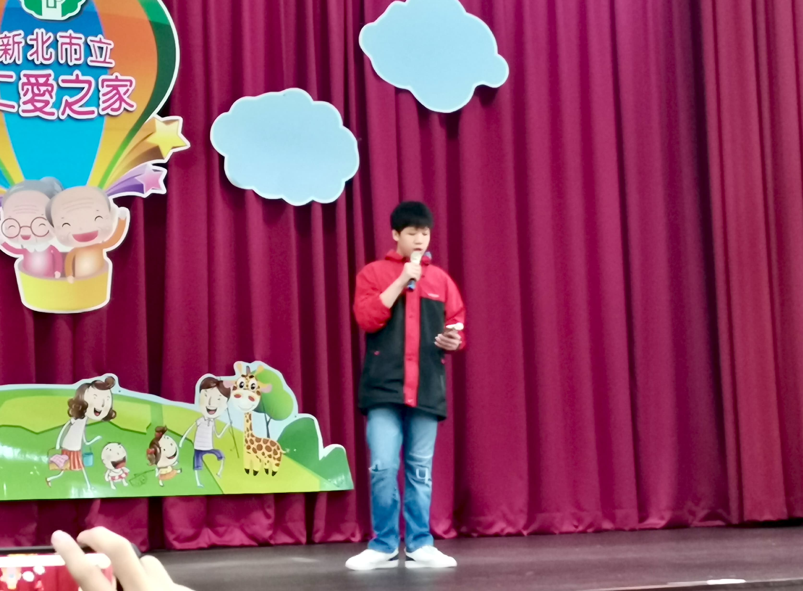
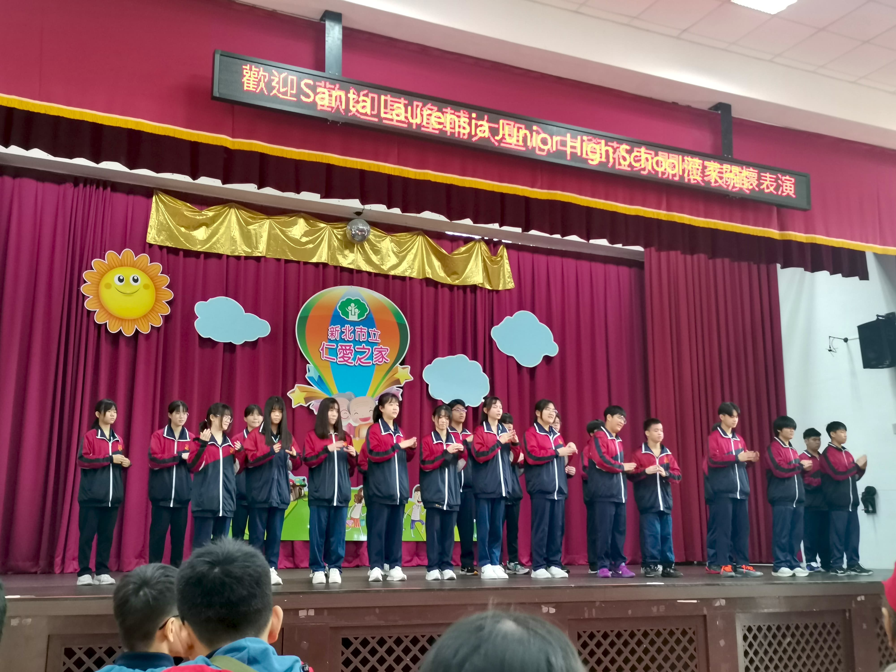

| 1. Tujuan & Kegiatan Tujuan: Untuk menghibur oma & opa. Kegiatan: Memberi salam kepada oma opa Performance SL dan SH Mengatakan terima kasih kepada oma & opa 2. Evaluasi Tujuan kami tercapai. Saya melihat banyak opa oma tersenyum senang pada pertunjukan kami. 3. Menyangkal diri Di Ren Ai, saya hampir tergoda untuk bermain handphone di hadapan publik. Tetapi, saya akhirnya berhasil mengendalikan diri. 4. Memanggul salib Sejujurnya, saya merasa sangat malu akan pertunjukan sekolah saya pada awalnya karena mereka masih belum menghafal sepenuhnya. Tetapi saya akhirnya tetap menonton pertunjukannya dan ternyata hasilnya lumayan baik. 5. Mengikuti Yesus Saya berdoa sebelum pertunjukan dimulai.   |